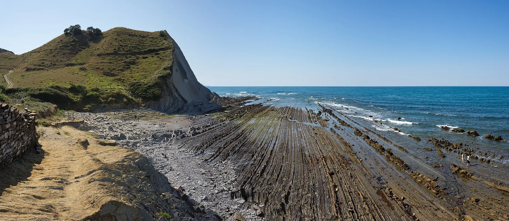
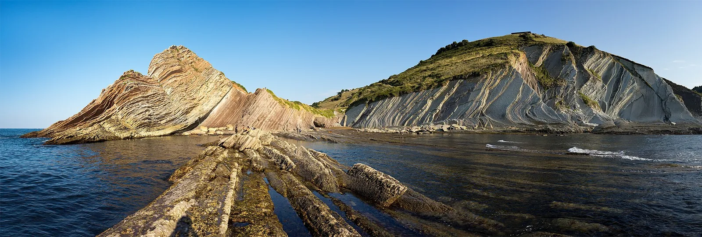

OV5 · Otros vuelos
OV5 · Andere Flüge
OV5 · Other flights
Flysch de Zumaia
Información
En los trece kilómetros de acantilados del Geoparque de la Costa Vasca, las capas de roca —el flysch— están puestas de canto, una contra otra, y se leen como las páginas de un libro: más de sesenta millones de años de historia de la Tierra, apilados y a la vista.
Entre esas páginas está el límite Cretácico-Paleógeno, el momento en que se extinguieron los dinosaurios no avianos hace 66 millones de años. Un estudio hecho íntegramente sobre los acantilados de Zumaia, muestreando los sedimentos depositados entre 66,4 y 65,4 millones de años atrás, reafirmó la hipótesis del impacto de un gran asteroide como causa de esa extinción.
Information
En los trece kilómetros de acantilados del Geoparque de la Costa Vasca, las capas de roca —el flysch— están puestas de canto, una contra otra, y se leen como las páginas de un libro: más de sesenta millones de años de historia de la Tierra, apilados y a la vista.
Entre esas páginas está el límite Cretácico-Paleógeno, el momento en que se extinguieron los dinosaurios no avianos hace 66 millones de años. Un estudio hecho íntegramente sobre los acantilados de Zumaia, muestreando los sedimentos depositados entre 66,4 y 65,4 millones de años atrás, reafirmó la hipótesis del impacto de un gran asteroide como causa de esa extinción.
Information
En los trece kilómetros de acantilados del Geoparque de la Costa Vasca, las capas de roca —el flysch— están puestas de canto, una contra otra, y se leen como las páginas de un libro: más de sesenta millones de años de historia de la Tierra, apilados y a la vista.
Entre esas páginas está el límite Cretácico-Paleógeno, el momento en que se extinguieron los dinosaurios no avianos hace 66 millones de años. Un estudio hecho íntegramente sobre los acantilados de Zumaia, muestreando los sedimentos depositados entre 66,4 y 65,4 millones de años atrás, reafirmó la hipótesis del impacto de un gran asteroide como causa de esa extinción.
Galería
Galerie
Gallery


Fuentes
Quellen
Sources
- Geoparkea, Geoparque de la Costa Vasca (UNESCO Global Geopark), Un estudio en el flysch aporta datos sobre la extinción de los dinosaurios — https://geoparkea.eus/es/noticias/asteroide-y-extincion-de-los-dinosaurios consultado 2026-10-06abgerufen 2026-10-06accessed 2026-10-06
- Geoparkea, Geoparque de la Costa Vasca, Geología — https://geoparkea.eus/en/science-education/geology consultado 2026-10-06abgerufen 2026-10-06accessed 2026-10-06